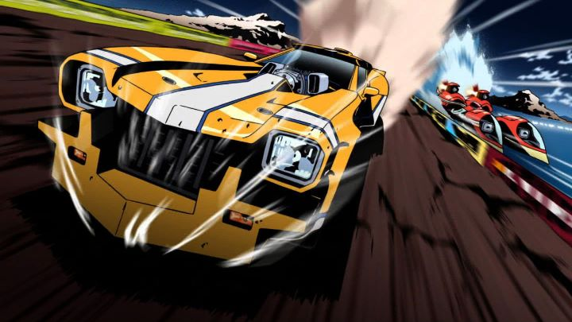

Few animated films have as much of a fascinating or troubled production history as 2009's "Redline." With evidence of its world being developed as early as 2003 (a loosely-tied OVA was released that year), "Redline" would reportedly be released several years later than planned, being entirely hand-drawn with barely any CGI. It was directed by Takeshi Koike, a man who was something of a maverick Japanese animator with bold and stylized character designs and movement, but aside from the short film "World Record" in "The Animatrix" anthology, he didn't really have much experience as a director. It's something of a miracle that Studio Madhouse's film, and Koike's magnum-opus, would ever see the light of day. But even if not knowing anything about the production history, or not knowing that this was an anime, "Redline" is a visually unique feast for the eyes. A science-fiction tale orbiting around a passion for racing, the opening eight-minutes is of the qualifying race to the "Redline" final on a completely different planet. It starts in a baren desert, with all manner of alien creatures hanging around the race track's finish line, taking bets and cheering when they see the racers coming in from the distance. Cut to the racers in a bevy of tricked-out cars, built with weapons and armor and speed-boosting engines that would cost millions of dollars to build, and are likely to be wrecked minutes later. Again, these cars are hand-drawn, lovingly so to enhance their elongated forms, warping as the camera struggles to keep up with them. What could make the scene more exciting? A thumping bass-powered rock track, heavy on the drums and the electric guitar. Shred those chords and those tires, pedal to the metal, don't look back. The turbo-boost might destroy the car and kill you? But you're so close to winning, go ahead and punch it in at the last lap.This is what makes "Redline" special: it is ecstasy for all the senses, and is an ode to the spirit of racing and competition. The cars look incredible, the bold-outlined and stylized characters are modern and hiply-designed, and everything is animated with a special care that makes the work clearly and only one from Takeshi Koike. The bright colors and other-worldly aliens might be a bit much to take in, but its hard to deny this took a lot of effort. And if you think it does look good, you think it looks GOOD. It's a special case of art and music coming together in a inspired setting in the best way possible. You might think the movie is all style and no substance, and that is partially true. The story follows JP as the underdog lead, a handsome and reckless racer with his best friend and agent supplying him the cash to race, but at the expense of getting in deep with gambling sharks trying to rig the sport. Racing is a beloved sport across all planets, but for some reason the final race, "Redline," is to be held on Roboworld, a planet of robots and the one society that hates the event. Roboworld is a dangerous nation even if one wasn't participating in a sport they actively despised: JP gets to the final largely because the other racers were too scared to risk racing there. So he, the beautiful rival Sonoshee, and a large cast of side characters all get ready for the race, with the race itself taking up the final third of the movie against Roboworld's army, weapons and mutating experiments. It's a simple story that serves the setup for the race, but is still really effective at what it sets out to do, especially with the relationship between JP and his agent Frisbee. Similarly, the English voice cast just sounds really cool in their roles, so you can't go wrong with either the English or Japanese dub.  There isn't much more to say about "Redline." It's is a phenomonally entertaining and beautiful action movie, and an animation fan's wet dream. Despite production issues, Koike was at least able to get work afterwards on the Lupin The Third franchise, which speaks volumes to his talent that anyone would hire him at all. I had seen the film originally on DVD and later on Bluray, and was surprised at how well the film translates on both, the Bluray only worthwhile for a handful of scenes with CGI-confetti in it. Decades prior, anime historians would refer to "Akira," "Ghost in the Shell," "Ninja Scroll" and "Vampire Hunter D - Bloodlust" as examples of transcending films of anime. In the 2010's decade, "Redline" would surely be what hardcore fans refer to in that pedigree. And since it is a standalone movie, it can be recommended to just about everyone (violence and brief-nudity tolerance pending).
- "Ani" More reviews can be found at : https://2danicritic.github.io/ Previous review: review_Rail_Wars Next review: review_Ride_Your_Wave